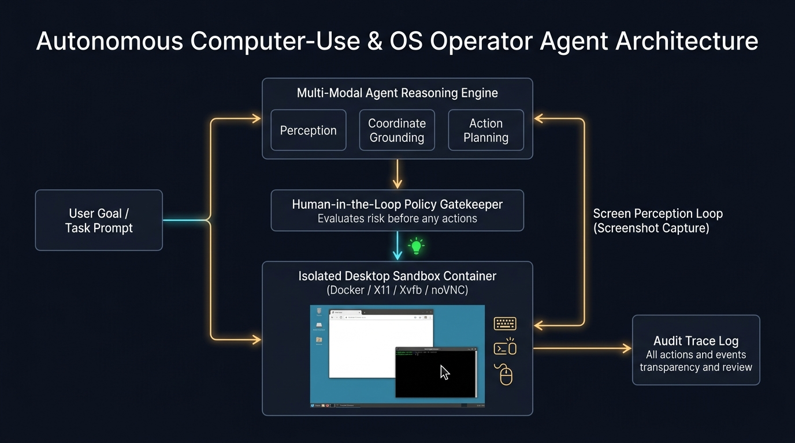

Anthropic Computer-Use v1OS-World BenchmarkX11/Xvfb Sandbox ContainerHuman-In-The-Loop Safety GateFull Action Video Auditing
Autonomous Computer-Use & OS Operator Agent Studio
Deploy autonomous desktop agents that control operating system environments directly via screen capture, coordinate grounding, mouse movement, and keyboard input inside containerized X11 sandboxes with real-time safety approval gates.
Coordinate Accuracy
99.2%
scaled 1920x1080 viewport
Action Loop Latency
1.2 s / step
screenshot perception & plan
Safety Boundary
Zero-Trust
isolated Dockerized Xvfb
Labor Time Saved
82%
repetitive SRE/Ops workflows
⚙️ Studio Parameters Live Sync
🤖
Autonomous Operations ROI
Automating cross-dashboard audits, incident verification, and multi-system data reconciliation saves 14 hours per week per on-call engineer while preventing human clerical errors.
// Compiling Autonomous Computer-Use Agent...📐 Architectural Execution Blueprint
Perception-Action Loop